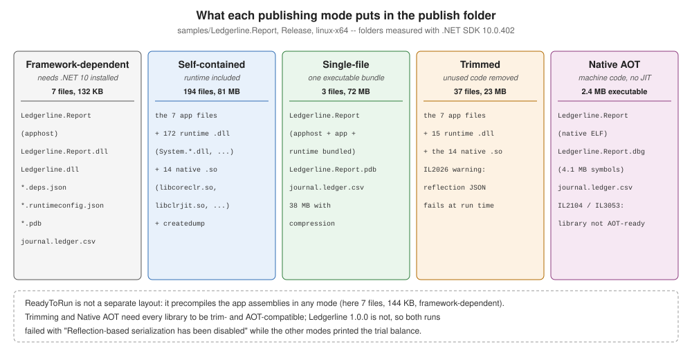

Publish and Deployment Models
|
This content was generated with the assistance of AI and should be verified against the official documentation before being relied on in production. |
dotnet build output is for the machine that built it; dotnet publish produces a folder to deploy. The same
application can be published in several modes, which trade folder size, start-up time and target-machine
requirements against compatibility with reflection and dynamic code. This page publishes Ledgerline's report sample
in every mode with .NET SDK 10.0.402 on Linux x64 and records what each produced — including two modes that build
and then fail at run time. The C# Reference’s overview is
Namespaces, Assemblies
and Projects — Deployment Models; deploying web applications is covered in
ASP.NET Core Deployment.
dotnet publish
dotnet publish restores, builds in Release (the default since .NET 8) and copies everything the application
needs into bin/Release/<tfm>/[<rid>/]publish/, or the folder given with -o. It takes the dotnet build options
(Restore, Build and Clean);
the mode is chosen with -r, --sc/--no-self-contained and MSBuild properties.
| Property | Effect |
|---|---|
|
Target a platform ( |
|
Include the .NET runtime. Since the .NET 8 SDK, for projects that target |
|
Create the native launcher ( |
|
Bundle into one executable. |
|
Remove unused code (self-contained only). |
|
Precompile assemblies to native code, keeping IL for the JIT. |
|
Compile the whole application ahead of time to native code. |
Ledgerline.Report in every mode
samples/Ledgerline.Report reads a journal, checks it and prints the trial balance as JSON through the Ledgerline
1.0.0 package. Each mode was published with dotnet publish samples/Ledgerline.Report -c Release -o pub/<mode> plus
the options in the table, and then run:
| Mode | Options | Files | Size | Runs? |
|---|---|---|---|---|
Framework-dependent |
(none) |
7 |
132 KB |
yes |
Framework-dependent, RID-specific |
|
7 |
132 KB |
yes |
Self-contained |
|
194 |
81 MB |
yes |
Single-file, self-contained |
|
3 |
72 MB |
yes |
Single-file, compressed |
|
3 |
38 MB |
yes |
Single-file, framework-dependent |
|
3 |
120 KB |
yes |
Trimmed |
|
37 |
23 MB |
no |
ReadyToRun |
|
7 |
144 KB |
yes |
Native AOT |
|
3 |
6.3 MB (2.4 MB executable) |
no |

Framework-dependent and self-contained
A framework-dependent folder holds only the application: the apphost, Ledgerline.Report.dll, Ledgerline.dll
from the package, the deps.json and runtimeconfig.json, the PDB and the journal file copied by the project. The
target machine needs a compatible .NET 10 runtime; runtimeconfig.json names it, and the runtime’s roll-forward rules
pick the installed one. It is the smallest, and it receives runtime security fixes when the machine’s runtime is
updated. Without -r it is also portable: dotnet Ledgerline.Report.dll runs it on any OS.
A self-contained folder adds the runtime itself — here 172 runtime assemblies and 14 native libraries
(libcoreclr.so, libclrjit.so, libhostfxr.so, …) — so nothing has to be installed, at 81 MB. The application is
now responsible for its runtime: a .NET security update reaches it only when it is republished.
Single-file
PublishSingleFile bundles the application (and, when self-contained, the runtime) into the apphost: three files
remain — the executable, the PDB and journal.ledger.csv, which the project marks CopyToOutputDirectory and which
is not bundled. EnableCompressionInSingleFile shrank the self-contained bundle from 72 MB to 38 MB, at the cost of
decompressing at start-up (0.22 s instead of 0.16 s for one run of each here). Native libraries are extracted to disk
at start-up only with IncludeNativeLibrariesForSelfExtract; files can be kept out of the bundle with
ExcludeFromSingleFile metadata.
Code in a single-file app must not use Assembly.Location (it is empty) — the analyzer warns about it (IL3000) when
PublishSingleFile is set.
Trimming
PublishTrimmed removes code the application does not reach. Ledgerline's Directory.Build.props sets
TreatWarningsAsErrors, so the first attempt failed on the trimmer’s warning about the Ledgerline package:
~/.nuget/packages/ledgerline/1.0.0/lib/net10.0/Ledgerline.dll : error IL2104: Assembly 'Ledgerline' produced trim warnings. For more information see https://aka.ms/il2104 [~/ledgerline/samples/Ledgerline.Report/Ledgerline.Report.csproj]
~/.nuget/packages/microsoft.net.illink.tasks/10.0.13/build/Microsoft.NET.ILLink.targets(103,5): error NETSDK1144: Optimizing assemblies for size failed. [~/ledgerline/samples/Ledgerline.Report/Ledgerline.Report.csproj]Warnings from package code are collapsed into one IL2104 per assembly. -p:TrimmerSingleWarn=false shows them
individually (with -p:TreatWarningsAsErrors=false to let the publish finish):
ILLink : Trim analysis warning IL2026: Ledgerline.Ledger.ToJson(IReadOnlyList<AccountBalance>): Using member 'System.Text.Json.JsonSerializer.Serialize(!!0, JsonSerializerOptions)' which has 'RequiresUnreferencedCodeAttribute' can break functionality when trimming application code. JSON serialization and deserialization might require types that cannot be statically analyzed. Use the overload that takes a JsonTypeInfo or JsonSerializerContext, or make sure all of the required types are preserved.The trimmed folder (37 files, 23 MB: 15 runtime assemblies instead of 172) published, and the program failed:
Unhandled exception. System.InvalidOperationException: Reflection-based serialization has been disabled for this application. Either use the source generator APIs or explicitly configure the 'JsonSerializerOptions.TypeInfoResolver' property.
at System.Text.Json.ThrowHelper.ThrowInvalidOperationException_JsonSerializerIsReflectionDisabled()
at System.Text.Json.JsonSerializerOptions.ConfigureForJsonSerializer()Trimmed applications turn off reflection-based System.Text.Json (JsonSerializerIsReflectionEnabledByDefault is
false), exactly as the warning predicted. A trim warning is a bug report, not noise: the fix belongs in the library
(source-generated serialization and IsTrimmable/IsAotCompatible), which
Designing a Library for
NuGet covers.
ReadyToRun
PublishReadyToRun compiles the application’s assemblies to native code ahead of time while keeping their IL, so the
JIT has less to do at start-up and can still re-optimise hot code. It is not a layout of its own: the framework-dependent
folder kept its 7 files and grew from 132 KB to 144 KB. In a framework-dependent app only the app’s assemblies are
precompiled (the shared runtime ships precompiled already); composite ReadyToRun (PublishReadyToRunComposite,
self-contained) compiles the app and runtime into one image. Cross-compiling ReadyToRun code is limited: the build
machine must be able to target the RID (for example, Linux cannot produce Windows ARM64 ReadyToRun code).
Native AOT
PublishAot compiles the whole program — application, libraries and the needed parts of the runtime — to one
native executable with no JIT. It needs the platform’s native toolchain (clang and a linker on Linux, the Visual C++
build tools on Windows) and implies trimming. With the warnings allowed, Ledgerline.Report produced a 2.4 MB
executable plus a 4.1 MB .dbg symbol file, after two warnings:
~/.nuget/packages/ledgerline/1.0.0/lib/net10.0/Ledgerline.dll : warning IL2104: Assembly 'Ledgerline' produced trim warnings. For more information see https://aka.ms/il2104
~/.nuget/packages/ledgerline/1.0.0/lib/net10.0/Ledgerline.dll : warning IL3053: Assembly 'Ledgerline' produced AOT analysis warnings.and the executable failed with the same Reflection-based serialization has been disabled exception (with native
offsets such as + 0x27 in place of IL frames). With TreatWarningsAsErrors on, the publish itself failed, and the
native compiler (ilc) reported MSB3077 … exited with return value 0, but errors were detected during execution.
Native AOT’s documented limitations include: no dynamic assembly loading, no runtime code generation
(System.Reflection.Emit), no built-in COM, and the trimming requirements above. Libraries declare that they meet them
with IsAotCompatible, which enables the IL2xxx and IL3xxx analyzers at build time, long before a publish.
Publish profiles
A .pubxml file under Properties/PublishProfiles/ stores a mode so it is not retyped. It is an MSBuild file whose
properties are applied when PublishProfile names it:
<Project>
<PropertyGroup>
<Configuration>Release</Configuration>
<RuntimeIdentifier>linux-x64</RuntimeIdentifier>
<SelfContained>true</SelfContained>
<PublishSingleFile>true</PublishSingleFile>
<EnableCompressionInSingleFile>true</EnableCompressionInSingleFile>
<PublishDir>$(MSBuildProjectDirectory)/../../pub/profile/</PublishDir>
</PropertyGroup>
</Project>dotnet publish samples/Ledgerline.Report -p:PublishProfile=linux-single Ledgerline.Report -> ~/ledgerline/samples/Ledgerline.Report/bin/Release/net10.0/linux-x64/Ledgerline.Report.dll
Ledgerline.Report -> ~/ledgerline/pub/profile/The folder held the 39 MB compressed executable, the PDB and the journal. Visual Studio writes the same files from its Publish dialog.
Source: dotnet publish: .pubxml files.
Common mistakes
-
Shipping
dotnet buildoutput — publish instead. -
Self-contained without a plan for runtime updates — republish on every .NET security release.
-
Silencing IL2104/IL3053 with
NoWarn— the warning describes a run-time failure; this page shows both. -
Trimming or AOT with libraries that are not annotated — test the published app, not the build.
-
Reading files next to
Assembly.Locationin a single-file app — useAppContext.BaseDirectory.